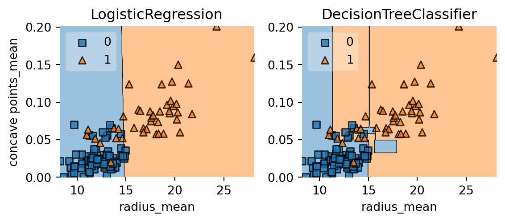

# Importe DecisionTreeClassifier
from sklearn.tree import DecisionTreeClassifier
# Importe train_test_split
from sklearn.model_selection import train_test_split
# Importe accuracy_score
from sklearn.metrics import accuracy_score
# Divida el dataset en 80% entrenamiento, 20% prueba
X_train, X_test, y_train, y_test = train_test_split(X, y,
test_size=0.2,
stratify=y,
random_state=1)
# Instancie dt
dt = DecisionTreeClassifier(max_depth=2, random_state=1)
# Fit dt al set de entrenamiento
dt.fit(X_train, y_train)
# Prediga con el set de prueba las etiquetas
y_pred = dt.predict(X_test)
# Evalue la exactitud del set de prueba
accuracy_score(y_test, y_pred)Árboles de clasificación y regresión
Los Árboles de clasificación y regresión (CART) son un conjunto de modelos de aprendizaje supervisado que se utilizan para problemas de clasificación y regresión. En este capítulo, conocerás el algoritmo CART.
Árbol de decisión para la clasificación
Árbol de calsificación
- Secuencia de preguntas si - no acerca de caracteristicas (features) individuales.
- Objetivo: Inferir las etiquetas.
- Pueden capturar relaciones no lineales entre entidades y etiquetas.
- No requieren que las características estén en la misma escala. (Ej: Estandarización).
Dataset Cáncer de mama en 2D

Diagrama de árbol de decisión
El número máximo de ramas que separan la parte superior de un extremo, se conoce como, profundidad máxima

Árbol de clasificación en scikit-learn
Regiones de Decisión
Un modelo de clasificación divide el espacio de características en regiones donde todas las instancias en una región se asignan a una sola etiqueta de clase.
Límites de Decisión: Superficie que separa diferentes regiones de decisión.

Entrena tu primer árbol de clasificación
En este ejercicio trabajarás con el Conjunto de datos de cáncer de mama de Wisconsin del repositorio de machine learning UCI. Predecirás si un tumor es maligno o benigno basándote en dos características: el radio medio del tumor (radius_mean) y su número medio de puntos cóncavos (concave points_mean).
El conjunto de datos ya está cargado en tu espacio de trabajo y está dividido en un 80 % de entrenamiento y un 20 % de prueba. Las matrices de características se asignan a X_train y X_test, mientras que las matrices de etiquetas se asignan a y_train y y_test, donde la clase 1 corresponde a un tumor maligno y la clase 0 a un tumor benigno. Para obtener resultados reproducibles, también definimos una variable llamada SEED que se fija en 1.
import pandas as pd
wbc = pd.read_csv('./data/wbc.csv')
wbc.head()| id | diagnosis | radius_mean | texture_mean | perimeter_mean | area_mean | smoothness_mean | compactness_mean | concavity_mean | concave points_mean | ... | texture_worst | perimeter_worst | area_worst | smoothness_worst | compactness_worst | concavity_worst | concave points_worst | symmetry_worst | fractal_dimension_worst | Unnamed: 32 | |
|---|---|---|---|---|---|---|---|---|---|---|---|---|---|---|---|---|---|---|---|---|---|
| 0 | 842302 | M | 17.99 | 10.38 | 122.80 | 1001.0 | 0.11840 | 0.27760 | 0.3001 | 0.14710 | ... | 17.33 | 184.60 | 2019.0 | 0.1622 | 0.6656 | 0.7119 | 0.2654 | 0.4601 | 0.11890 | NaN |
| 1 | 842517 | M | 20.57 | 17.77 | 132.90 | 1326.0 | 0.08474 | 0.07864 | 0.0869 | 0.07017 | ... | 23.41 | 158.80 | 1956.0 | 0.1238 | 0.1866 | 0.2416 | 0.1860 | 0.2750 | 0.08902 | NaN |
| 2 | 84300903 | M | 19.69 | 21.25 | 130.00 | 1203.0 | 0.10960 | 0.15990 | 0.1974 | 0.12790 | ... | 25.53 | 152.50 | 1709.0 | 0.1444 | 0.4245 | 0.4504 | 0.2430 | 0.3613 | 0.08758 | NaN |
| 3 | 84348301 | M | 11.42 | 20.38 | 77.58 | 386.1 | 0.14250 | 0.28390 | 0.2414 | 0.10520 | ... | 26.50 | 98.87 | 567.7 | 0.2098 | 0.8663 | 0.6869 | 0.2575 | 0.6638 | 0.17300 | NaN |
| 4 | 84358402 | M | 20.29 | 14.34 | 135.10 | 1297.0 | 0.10030 | 0.13280 | 0.1980 | 0.10430 | ... | 16.67 | 152.20 | 1575.0 | 0.1374 | 0.2050 | 0.4000 | 0.1625 | 0.2364 | 0.07678 | NaN |
5 rows × 33 columns
# Separamos las columnas que corresponden a X
X = wbc[['radius_mean', 'concave points_mean']]
# Separamos la columna con los datos a predecir
y = wbc['diagnosis']
y = y.map({'M': 1, 'B': 0})
SEED = 1from sklearn.model_selection import train_test_split
X_train, X_test, y_train, y_test = train_test_split(X, y,
test_size=0.2,
stratify=y,
random_state=SEED)Instrucciones:
Importa
DecisionTreeClassifierdesdesklearn.tree.Instancia un
DecisionTreeClassifierdtde profundidad máxima igual 6.Ajusta
dtal conjunto de entrenamiento.Predice las etiquetas del conjunto de pruebas y asigna el resultado a
y_pred.
# Import DecissionTreeClassifier from sklearn.from sklearn.tree
from sklearn.tree import DecisionTreeClassifier
# Instantiate a DecisionTreeClassifier 'dt' with a maximum depth of 6
dt = DecisionTreeClassifier(max_depth=6, random_state=SEED)
# Fit dt to the training set
dt.fit(X_train, y_train)
# Predict test set labels
y_pred = dt.predict(X_test)
print(y_pred[0:5])[0 0 0 1 0]Se puede ver las primeras cinco predicciones hechas por el árbol ajustado en el conjunto de prueba.
Evaluar el árbol de clasificación
Ahora que has ajustado tu primer árbol de clasificación, es hora de evaluar su rendimiento en el conjunto de pruebas. Lo harás utilizando la métrica de precisión, que corresponde a la fracción de predicciones correctas realizadas en el conjunto de pruebas.
Instrucciones
Importa la función
accuracy_scoredesklearn.metrics.Predice las etiquetas del conjunto de pruebas y asigna la matriz obtenida a
y_pred.Evalúa la puntuación de precisión del conjunto de pruebas de
dtllamadoaccuracy_score()y asigna el valor aacc.
# Import accuracy_score
from sklearn.metrics import accuracy_score
# Predict test set labels
y_pred = dt.predict(X_test)
# Compute test set accuracy
acc = accuracy_score(y_test, y_pred)
print(f'Test set accuracy: {acc:.2f}')Test set accuracy: 0.89Regresión logística frente a árbol de clasificación
Un árbol de clasificación divide el espacio de características en regiones rectangulares. En cambio, un modelo lineal como la regresión logística solo produce un único límite de decisión lineal que divide el espacio de características en dos regiones de decisión.
Hemos escrito una función personalizada llamada plot_labeled_decision_regions() que puedes utilizar para trazar las regiones de decisión de una lista que contenga dos clasificadores entrenados.
from mlxtend.plotting import plot_decision_regions
def plot_labeled_decision_regions(X, y, models):
'''
'''
if len(models) != 2:
raise Exception('''
Models should be a list containing only two trained classifiers.
''')
if not isinstance(X, pd.DataFrame):
raise Exception('''
X has to be a pandas DataGrame with two numerical features.
''')
if not isinstance(y, pd.Series):
raise Exception('''
y has to be a pandas Series corresponding to the labels.
''')
fig, ax = plt.subplots(1, 2, figsize=(6.0, 2.7), sharey=True)
for i, model in enumerate(models):
plot_decision_regions(X.values, y.values, model, legend= 2, ax = ax[i])
ax[i].set_title(model.__class__.__name__)
ax[i].set_xlabel(X.columns[0])
if i == 0:
ax[i].set_ylabel(X.columns[1])
ax[i].set_ylim(X.values[:,1].min(), X.values[:,1].max())
ax[i].set_xlim(X.values[:,0].min(), X.values[:,0].max())
plt.tight_layout()
plt.show()Instrucciones:
Importa
LogisticRegressiondesdesklearn.linear_model.Instancia un modelo
LogisticRegressiony asígnalo alogreg
import matplotlib.pyplot as plt
# Import LogisticRegression from sklearn.linear_model
from sklearn.linear_model import LogisticRegression
# Instatiate logreg
logreg = LogisticRegression(random_state=1)
# Fit logreg to the training set
logreg.fit(X_train, y_train)
# Define a list called clfs containing the two classifiers logreg and dt
clfs = [logreg, dt]
# Review the decision regions if the two classifiers
plot_labeled_decision_regions(X_test, y_test, clfs)
plt.show()C:\Users\Edwin Reyes\AppData\Local\Programs\Python\Python312\Lib\site-packages\sklearn\base.py:493: UserWarning:
X does not have valid feature names, but LogisticRegression was fitted with feature names
C:\Users\Edwin Reyes\AppData\Local\Programs\Python\Python312\Lib\site-packages\sklearn\base.py:493: UserWarning:
X does not have valid feature names, but DecisionTreeClassifier was fitted with feature names

Aprendizaje del árbol de clasificación
Construyendo los bloques de un árbol de decisión
Árboles de decisión: Estructura de datos que consiste de una jerarquía de nodos.
Nodo: Punto que implica una pregunta o una predicción.
Hay tres clases de nodos:
Root: Es el nodo en el que el árbol de decisiones empieza a crecer. No tiene nodo padre, involucra una pregunta que da lugar a dos nodos hijos a través de dos ramas.
Internal node: Es un nodo que tiene un nodo padre. También implica una pregunta que da lugar a 2 nodos hijos
Leaf: Tiene un nodo padre y no tiene hijos. Tiene un nodo principal y no implica preguntas. Es donde se hace la predicción.
Ganancia de Información (IG)

\[ IG(\underbrace{f}_{\text{feature}}, \underbrace{sp}_{\text{split-point}} ) = I(\text{parent}) - \big( \frac{N_{\text{left}}}{N}I(\text{left}) + \frac{N_{\text{right}}}{N}I(\text{right}) \big) \]
Criterios para medir la impureza de un nodo
- Índice de gini
- entropía
Aprendizaje de un árbol de clasificación
- Los nodos crecen recursivamente.
- En cada nodo, la división de los datos se basa en:
- Caracterísitca \(f\) y el punto de división \(sp\) para maximizar \(IG(\text{node})\).
- Si \(IG(\text{node}) = 0\), el nodo se declara como hoja.
Hacer crecer un árbol de clasificación
Cuál de las siguientes no es una regla de crecimiento de un árbol de calsificación sin restricciones?
Respuestas Posibles
Utilizar la entropía como criterio
En este ejercicio, entrenarás un árbol de clasifiacación en el conjunto de datos Cáncer de Mama de Wisconsin utilizando la entropia como criterio de información. Lo harás utilizando las 30 características del conjunto de datos, que se divide en un 80% de entrenamiento y un 20 % de prueba.
Instrucciones:
- Importa
DecisionTreeClassifierdesdesklearn.tree. - Instancia un
DecisionTreeClassifierdt_entropycon una profundidad máxima de 8. - Establece el criterio de información en
entropy. - Ajusta
dt_entropyen el conjunto de entrenamiento.
# Import DesicionTreeClassifier from sklearn.ree
from sklearn.tree import DecisionTreeClassifier
# Instatntiate dt_entropy, set 'entropy' as the information criterion
dt_entropy = DecisionTreeClassifier(max_depth=8, criterion='entropy', random_state=1)
# Fit dt_entropy to the training set
dt_entropy.fit(X_train, y_train)DecisionTreeClassifier(criterion='entropy', max_depth=8, random_state=1)In a Jupyter environment, please rerun this cell to show the HTML representation or trust the notebook.
On GitHub, the HTML representation is unable to render, please try loading this page with nbviewer.org.
DecisionTreeClassifier(criterion='entropy', max_depth=8, random_state=1)
Entropía vs índice de Gini
En este ejercicio compararás la precisión del conjunto de pruebas de dt_entropy con la precisión de otro árbol llamado dt_gini. El árbol dt_gini se entrenón en el mismo conjunto de datos utilizando los mismos parámetros, excepto el criterio de información, que se fijo en el índice de Gini utilizando la palabra clave gini
dt_gini = DecisionTreeClassifier(max_depth=8, criterion='gini', random_state=1)
dt_gini.fit(X_train, y_train)DecisionTreeClassifier(max_depth=8, random_state=1)In a Jupyter environment, please rerun this cell to show the HTML representation or trust the notebook.
On GitHub, the HTML representation is unable to render, please try loading this page with nbviewer.org.
DecisionTreeClassifier(max_depth=8, random_state=1)
Instrucciones:
- Importa
accuracy_scoredesdesklearn.metrics. - Predice las etiquetas del conjunto de prueba de
dt_entropyy asigna el resultado ay_pred. - Evalúa la precisión del conjunto de pruebas de
dt_entropyy asigna el resultado aaccuracy_entropy. - Revisa
accuracy_entropyyaccuracy_gini.
# Import accuracy_score form sklearn.metrics
from sklearn.metrics import accuracy_score
# Use dt_entropy to predict test set labels
y_pred = dt_entropy.predict(X_test)
y_pred_gini = dt_gini.predict(X_test)
# Evaluate accuracy_entropy
accuracy_entropy = accuracy_score(y_test, y_pred)
accuracy_gini = accuracy_score(y_test, y_pred_gini)
# Print accuracy_entropy
print(f'Accuracy achieved by using entropy: {accuracy_entropy:.3f}')
# Print accuracy_gini
print(f'Accuracy achieved by using gini: {accuracy_gini:.3f}')Accuracy achieved by using entropy: 0.886
Accuracy achieved by using gini: 0.921Los dos modelos logran casi la misma precisión. La mayoría de las veces, el índice de gini y la entropía llevan a los mismos resultados. El índice de gini es ligeramente más rápido de calcular y es el criterio predeterminado utilizado en el modelo DecisionTreeClassifier de scikit-learn.
Árbol de decisión para la regresión
- Árbol de regresión en scikit-learn
# Import DecisionTreeRegressor
from sklearn.tree import DecisionTreeRegressor
# Import train_test_split
from sklearn.model_selection import train_test_split
# Import mean_squared_error as MSE
from sklearn.metrics import mean_squared_error as MSE
# Split data into 80% train and 20% test
X_train, X_test, y_train, y_test = train_test_split(X, y,
test_size=0.2,
random_state=3)
# Instantiate a DecisionTreeRegressor 'dt'
dt = DecisionTreeRegressor(max_depth=4,
min_samples_leaf=0.1,
random_state=3) # dato de parada con 10% datos por hoja
# Fit 'dt' to the training-set
dt.fit(X_train, y_train)
# Predict test-set labels
y_pred = dt.predict(X_test)
# Compute test-set MSE
mse_dt = MSE(y_test, y_pred)
# Compute test_set RMSE
rmse_dt = mse_dt ** (1 / 2)
# Print rmse_dt
print(rmse_dt)Criterio de información para el Árbol de Regresión \[ I(\text{node}) = \underbrace{\text{MSE}(\text{node})}_{\text{mean-squared-error}} = \dfrac{1}{N_{\text{node}}} \sum_{i \in \text{node}} \big(y^{(i)} - \hat{y}_{\text{node}} \big)^2 \] \[ \underbrace{\hat{y}_{\text{node}}}_{\text{mean-target-value}} = \dfrac{1}{N_{\text{node}}} \sum_{i \in \text{node}}y^{(i)}\]
Prediction \[ \hat{y}_{\text{pred}}(\text{leaf}) = \dfrac{1}{N_{\text{leaf}}} \sum_{i \in \text{leaf}} y^{(i)}\]
Regresión lineal vs Árbol de regresión

Entrena tu primer árbol de regresión
En este ejercicio, entrenarás un árbol de regresión para predecir el consumo de mpg (millas por galón) de los coches del conjunto de datos auto-mpg utilizando las seis características disponibles.
Leemos el dataset:
auto = pd.read_csv('./data/auto.csv')
auto.head()| mpg | displ | hp | weight | accel | origin | size | |
|---|---|---|---|---|---|---|---|
| 0 | 18.0 | 250.0 | 88 | 3139 | 14.5 | US | 15.0 |
| 1 | 9.0 | 304.0 | 193 | 4732 | 18.5 | US | 20.0 |
| 2 | 36.1 | 91.0 | 60 | 1800 | 16.4 | Asia | 10.0 |
| 3 | 18.5 | 250.0 | 98 | 3525 | 19.0 | US | 15.0 |
| 4 | 34.3 | 97.0 | 78 | 2188 | 15.8 | Europe | 10.0 |
Se realiza una conversión de variables
auto = pd.get_dummies(auto, dtype=int) # columnas categoricas a numericas
auto.head()| mpg | displ | hp | weight | accel | size | origin_Asia | origin_Europe | origin_US | |
|---|---|---|---|---|---|---|---|---|---|
| 0 | 18.0 | 250.0 | 88 | 3139 | 14.5 | 15.0 | 0 | 0 | 1 |
| 1 | 9.0 | 304.0 | 193 | 4732 | 18.5 | 20.0 | 0 | 0 | 1 |
| 2 | 36.1 | 91.0 | 60 | 1800 | 16.4 | 10.0 | 1 | 0 | 0 |
| 3 | 18.5 | 250.0 | 98 | 3525 | 19.0 | 15.0 | 0 | 0 | 1 |
| 4 | 34.3 | 97.0 | 78 | 2188 | 15.8 | 10.0 | 0 | 1 | 0 |
X = auto.drop('mpg', axis='columns')
y = auto['mpg']X_train, X_test, y_train, y_test = train_test_split(X, y, test_size=0.2, random_state=3)Instrucciones
- Importa
DecisionTreeRegressordesdesklearn.tree. - Instancia un
DecisionTreeRegressordtcon profundidad máxima 8 ymin_samples_leaffijado en 0.13. - Ajusta
dtal conjunto de entrenamiento
# Import DecisionTreeRegressor from sklearn.tree
from sklearn.tree import DecisionTreeRegressor
# Instantiate dt
dt = DecisionTreeRegressor(max_depth=8, min_samples_leaf=0.13, random_state=3)
# Fit dt to the training set
dt.fit(X_train, y_train)DecisionTreeRegressor(max_depth=8, min_samples_leaf=0.13, random_state=3)In a Jupyter environment, please rerun this cell to show the HTML representation or trust the notebook.
On GitHub, the HTML representation is unable to render, please try loading this page with nbviewer.org.
DecisionTreeRegressor(max_depth=8, min_samples_leaf=0.13, random_state=3)
Evaluar el árbol de regresión
En este ejercicio, evaluarás el rendimiento del conjunto de pruebas de dt utilizando la métrica Error cuadrático medio (RMSE). La RMSE de un modelo mide, por término medio, cuánto difieren las predicciones del modelo de las etiquetas reales. El RMSE de un modelo puede obtenerse calculando la raíz cuadrada del Error Cuadrático Medio del modelo (MSE).
Instrucciones:
- Importa la función
mean_squared_errorcomoMSEdesdesklearn.metrics. - Predice las etiquetas del conjunto de pruebas y asigna la salida a
y_pred. - Calcula el conjunto de pruebas MSE llamando a
MSEy asigna el resultado amse_dt. - Calcula el conjunto de prueba RMSE y asígnalo a
rmse_dt
# Import mean_squared_error from sklearn.metrics as MSE
from sklearn.metrics import mean_squared_error as MSE
# Compute y_pred
y_pred = dt.predict(X_test)
# Compute mse_dt
mse_dt = MSE(y_test, y_pred)
# Compute rmse_dt
rmse_dt = (mse_dt) ** (1 / 2)
# Print rmse_dt
print(f'Test set RMSE of dt: {rmse_dt:.2f}')Test set RMSE of dt: 4.37Regresión lineal vs árbol de regresión
En este ejercicio, compararás el conjunto de pruebas RMSE de dt con el obtenido por un modelo de regresión lineal. Ya hemos instanciado un modelo de regresión lineal lr y lo hemos entrenado con el mismo conjunto de datos que dt
Preprocesamiento:
from sklearn.linear_model import LinearRegression
lr = LinearRegression()
lr.fit(X_train, y_train)LinearRegression()In a Jupyter environment, please rerun this cell to show the HTML representation or trust the notebook.
On GitHub, the HTML representation is unable to render, please try loading this page with nbviewer.org.
LinearRegression()
Instrucciones
- Predice las etiquetas del conjunto de pruebas utilizando el modelo de regresion lineal (
lr) y asigna el resulta ay_pred_lr. - Calcula el conjunto de pruebas MSE y asigna el resultado a
mse_lr. - Calcula el conjunto de prueba RMSE y asigna el resultado a
rmse_lr
# Predict test set labels
y_pred_lr = lr.predict(X_test)
# Compute mse_lr
mse_lr = MSE(y_pred_lr, y_test)
# Compute rmse_lr
rmse_lr = mse_lr ** (1/2)
# print rmse_lr
print(f'Linear Regression test set RMSE: {rmse_lr:.2f}')
# print rmse_dt
print(f'Regression Tree test set RMSE: {rmse_dt:.2f}')Linear Regression test set RMSE: 5.10
Regression Tree test set RMSE: 4.37